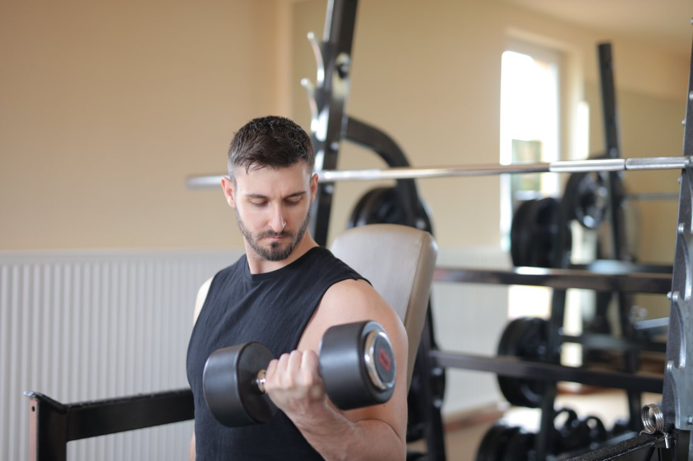
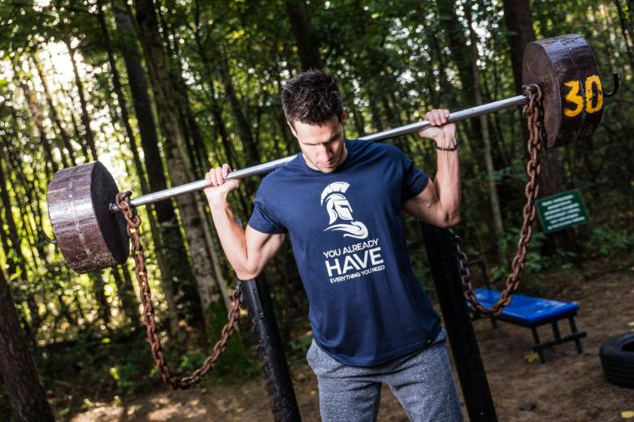
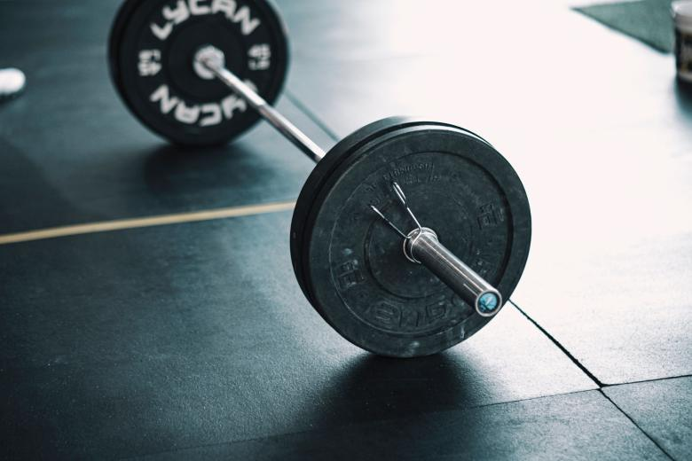

Zona 01
Peso libre
Barras, discos, mancuernas, racks y bancos. Es la zona que pregunta el que ya entrena: quiere saber si hay barra olímpica y hasta cuántos kilos llegan los discos.
falta: qué hay en esta zona y hasta qué peso
Propuesta de sitio web — preparada para Yakuza's Gym por CristalWeb
4,9 con 28 reseñas, y nadie del pueblo puede ver desde el teléfono qué máquinas hay ni a qué hora está lleno. Las dos preguntas que se hacen antes de inscribirse, y ninguna tiene respuesta pública.
Gimnasio · Loncoche
Es lo primero que pregunta cualquiera antes de inscribirse en un gimnasio que no conoce, y lo segundo es a qué hora está lleno. Las dos se contestan con una lista y un horario — y ninguna de las dos está escrita en ninguna parte.
El inventario, por zonas
Ésta es la forma de la sección; el contenido lo pone el gimnasio. No hay ni una máquina inventada acá: las cuatro zonas están armadas y vacías, porque decir que existe una prensa que no está es la manera más rápida de perder a alguien que llegó manejando.
Zona 01
Barras, discos, mancuernas, racks y bancos. Es la zona que pregunta el que ya entrena: quiere saber si hay barra olímpica y hasta cuántos kilos llegan los discos.
falta: qué hay en esta zona y hasta qué peso
Zona 02
Prensa, poleas, jalón, extensiones. Es lo que busca quien está empezando o vuelve después de años: máquinas guiadas donde no hay que saber técnica el primer día.
falta: qué máquinas hay
Zona 03
Trotadoras, elípticas, bicicletas, escaladores. Acá lo que importa no es sólo qué hay, sino cuántas: en hora punta, tres trotadoras para veinte personas es un dato.
falta: qué hay y cuántas unidades
Zona 04
Colchonetas, zona funcional, camarines, duchas, casilleros, estacionamiento. Lo que no es máquina y decide igual.
falta: qué hay disponible
Un gimnasio de pueblo compite con la casa y con la caminata gratis, no con otro gimnasio. Lo que hace que alguien pague un mes es ver que adentro hay algo que en la casa no tiene — y eso se ve en una lista, no en una foto de la fachada.
Además ahorra la conversación de siempre: llega uno preguntando por la prensa, y la respuesta ya estaba escrita antes de que tomara el teléfono.
Lo que se pregunta antes de inscribirse
Un gimnasio chico se llena a la misma hora todos los días, y quien sale del trabajo a las seis quiere saber si va a esperar turno por la banca. Publicar cuántos puestos hay de cada cosa —y a qué hora está más vacío— es más útil que cualquier promoción, y es un dato que el dueño sabe de memoria.
Lo segundo que se pregunta
Un horario publicado y cumplido vale más que cualquier promoción. Y el dato que nadie publica —a qué hora está lleno— es justamente el que decide si alguien viene a las siete o a las once.
Días y horas
El dato que nadie publica
La mayoría de los gimnasios se llenan a la misma hora: temprano antes del trabajo y entre las siete y las nueve de la tarde. Decir cuáles son las horas tranquilas es un favor al socio y descongestiona la sala solo.
falta: cuáles son las horas llenas y cuáles las tranquilas
Lo práctico
Esta página no entrega planes de entrenamiento, rutinas ni consejos de ejercicio, y no promete ningún resultado: es información práctica sobre un local —qué equipamiento hay y a qué hora abre—. Entrenar con carga se aprende con alguien al lado. Todo el equipamiento y los horarios están declarados como pendientes porque no me constan.
Lo que hay, dicho por escrito
Máquinas, horarios y planes — sin letra chica
Para consultar o inscribirse
Es el número publicado en su ficha de Google.

Estas seis ya aparecen más arriba en la página. Vuelven acá en otro tamaño porque una sola pasada de imágenes deja el scroll vacío, y porque de cerca se ven cosas que en grande se pierden. La procedencia de cada una está en imagenes/FUENTES.txt.


El 4,9 con 28 reseñas de su ficha de Google y el teléfono 9 5750 6241. No tienen sitio propio.
Las cuatro zonas y los horarios completos. No inventé ni una máquina: en un gimnasio, prometer equipamiento que no está se descubre el primer día y no hay vuelta.
El inventario de las cuatro zonas —con cantidades en cardio—, el horario de los tres bloques, las horas punta y las tres respuestas prácticas. Es una vuelta por la sala con el teléfono en la mano.